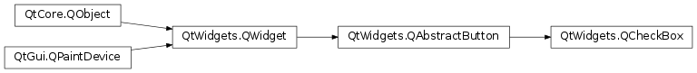
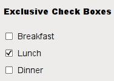
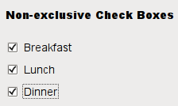

QCheckBox¶
Synopsis¶
Functions¶
- def
checkState() - def
initStyleOption(option) - def
isTristate() - def
setCheckState(state) - def
setTristate([y=true])
Signals¶
- def
stateChanged(arg__1)
Detailed Description¶
The
PySide2.QtWidgets.QCheckBoxwidget provides a checkbox with a text label.
A
PySide2.QtWidgets.QCheckBoxis an option button that can be switched on (checked) or off (unchecked). Checkboxes are typically used to represent features in an application that can be enabled or disabled without affecting others. Different types of behavior can be implemented. For example, aPySide2.QtWidgets.QButtonGroupcan be used to group check buttons logically, allowing exclusive checkboxes. However,PySide2.QtWidgets.QButtonGroupdoes not provide any visual representation.The image below further illustrates the differences between exclusive and non-exclusive checkboxes.
  Whenever a checkbox is checked or cleared, it emits the signal
PySide2.QtWidgets.QCheckBox.stateChanged(). Connect to this signal if you want to trigger an action each time the checkbox changes state. You can usePySide2.QtWidgets.QAbstractButton.isChecked()to query whether or not a checkbox is checked.In addition to the usual checked and unchecked states,
PySide2.QtWidgets.QCheckBoxoptionally provides a third state to indicate “no change”. This is useful whenever you need to give the user the option of neither checking nor unchecking a checkbox. If you need this third state, enable it withPySide2.QtWidgets.QCheckBox.setTristate(), and usePySide2.QtWidgets.QCheckBox.checkState()to query the current toggle state.Just like
PySide2.QtWidgets.QPushButton, a checkbox displays text, and optionally a small icon. The icon is set withPySide2.QtWidgets.QAbstractButton.setIcon(). The text can be set in the constructor or withPySide2.QtWidgets.QAbstractButton.setText(). A shortcut key can be specified by preceding the preferred character with an ampersand. For example:checkbox = QCheckBox("C&ase sensitive", self)In this example, the shortcut is Alt+A . See the
QShortcutdocumentation for details. To display an actual ampersand, use ‘&&’.Important inherited functions:
PySide2.QtWidgets.QAbstractButton.text(),PySide2.QtWidgets.QAbstractButton.setText(),PySide2.QtWidgets.QAbstractButton.text(), pixmap(), setPixmap(), accel(), setAccel(), isToggleButton(),PySide2.QtWidgets.QAbstractButton.setDown(),PySide2.QtWidgets.QAbstractButton.isDown(), isOn(),PySide2.QtWidgets.QCheckBox.checkState(),PySide2.QtWidgets.QAbstractButton.autoRepeat(), isExclusiveToggle(),PySide2.QtWidgets.QAbstractButton.group(),PySide2.QtWidgets.QAbstractButton.setAutoRepeat(),PySide2.QtWidgets.QAbstractButton.toggle(),PySide2.QtWidgets.QAbstractButton.pressed(),PySide2.QtWidgets.QAbstractButton.released(),PySide2.QtWidgets.QAbstractButton.clicked(),PySide2.QtWidgets.QAbstractButton.toggled(),PySide2.QtWidgets.QCheckBox.checkState(), andPySide2.QtWidgets.QCheckBox.stateChanged().
-
class
PySide2.QtWidgets.QCheckBox([parent=nullptr])¶ -
class
PySide2.QtWidgets.QCheckBox(text[, parent=nullptr]) Parameters: - text – unicode
- parent –
PySide2.QtWidgets.QWidget
Constructs a checkbox with the given
parent, but with no text.parentis passed on to thePySide2.QtWidgets.QAbstractButtonconstructor.Constructs a checkbox with the given
parentandtext.parentis passed on to thePySide2.QtWidgets.QAbstractButtonconstructor.
-
PySide2.QtWidgets.QCheckBox.checkState()¶ Return type: PySide2.QtCore.Qt.CheckStateReturns the checkbox’s check state. If you do not need tristate support, you can also use
QAbstractButton.isChecked(), which returns a boolean.See also
PySide2.QtWidgets.QCheckBox.setCheckState()Qt.CheckState
-
PySide2.QtWidgets.QCheckBox.initStyleOption(option)¶ Parameters: option – PySide2.QtWidgets.QStyleOptionButtonInitializes
optionwith the values from thisPySide2.QtWidgets.QCheckBox. This method is useful for subclasses that require aPySide2.QtWidgets.QStyleOptionButton, but do not want to fill in all the information themselves.See also
-
PySide2.QtWidgets.QCheckBox.isTristate()¶ Return type: PySide2.QtCore.bool
-
PySide2.QtWidgets.QCheckBox.setCheckState(state)¶ Parameters: state – PySide2.QtCore.Qt.CheckStateSets the checkbox’s check state to
state. If you do not need tristate support, you can also useQAbstractButton.setChecked(), which takes a boolean.See also
PySide2.QtWidgets.QCheckBox.checkState()Qt.CheckState
-
PySide2.QtWidgets.QCheckBox.setTristate([y=true])¶ Parameters: y – PySide2.QtCore.bool
-
PySide2.QtWidgets.QCheckBox.stateChanged(arg__1)¶ Parameters: arg__1 – PySide2.QtCore.int
© 2018 The Qt Company Ltd. Documentation contributions included herein are the copyrights of their respective owners. The documentation provided herein is licensed under the terms of the GNU Free Documentation License version 1.3 as published by the Free Software Foundation. Qt and respective logos are trademarks of The Qt Company Ltd. in Finland and/or other countries worldwide. All other trademarks are property of their respective owners.